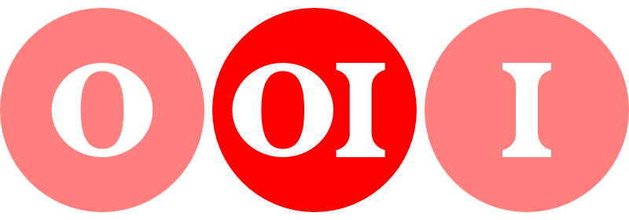

Typography Tool

Rotten Tomatoes is a well known yet untapped treasure chest of data about movies. My project began with a desire to explore that data in an open-ended fashion to see where it could lead. Through my exploration, I developed a hypothesis for how user rating systems such as those used by Rotten Tomatoes, Yelp, and Amazon could be improved. I created a MVP app for testing that hypothesis that evolved into an extension for Chrome that creates personalized ratings for each movie, for each user. It's a personal project that is not solicited nor endorsed by Rotten Tomatoes. I created the UX & visual design, and wrote the Javascript code.
Try it yourself! Download the Rotten Tomatoes Extension at the Chrome Web Store.
The first incarnation of the app was built to determine which film critic shared my taste in movies. I wrote a script to screen-scrape the star-ratings of each critic who had rated a list of films that I had also rated. This allowed me to give each critic a similarity score.
After the compiling the raw data into a spreadsheet, I then tried comparing every professional film critic to every other film critic to find out who had the most and least similar tastes. On the scatter-plot image, each dot represents a vector between two unique film critics. Each dot's position on the Y-axis shows the number of unique films that both critics rated. A higher position means more points of comparison. Each dot's position on the X-axis shows the similarity score between the two critics. The plot tells us that if two critics have similar star-ratings for roughly 65% of the films they both rated, then they have highly similar tastes. The plot also shows that the similarity score reaches high accuracy after comparing the ratings of both critics for roughly 40 films.
I knew there was much more that I could do with this kind of data, so I set out to create an purely functional MVP that I could share with the public to generate feedback and new ideas. After publishing the chrome extension, I asked a few friends to install and play with the app, then I interviewed them about their experiences.
I discovered that people who aren’t as obsessed with film as I am wanted something more practical that would improve the Rotten Tomatoes website whenever they visited. These open-ended conversations surfaced the ideas of personalizing the Tomatometer, adding a histogram of critic ratings, and ranking the critic review-blurbs based on each critic’s similarity to the user. As I added these new features, I also tackled the app’s UX, providing an interface that seamlessly blends into the existing Rotten Tomatoes website.
The app has a small base of around 500 users who all found it through organic searching. These users occasionally send me bug reports and suggestions. Most recently, I created on on-boarding experience for new users including a tool for importing existing star-ratings saved to Rotten Tomatoes. I've also written a short essay based on this research that describes the flaws in online ratings systems and how they can be improved.